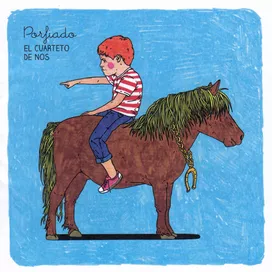

Las raíces del cuarteto se remontan a la década de los 80, en Uruguay. La dictadura y la censura
habían terminado recientemente en el país y se sentía en el ambiente una efervescencia artística muy
grande después de tanta represión.
En 1980 los hermanos Roberto y Ricardo Musso, acompañados de su amigo Santiago Tabella empezaron a
tocar como una banda de amigos sin un nombre fijo, hacían covers de canciones de The Beatles y otros
grupos populares en fiestas pequeñas de familiares y amigos. Una vez en la Universidad empezaron a
escribir sus propias canciones y a subir al escenario, vestidos de “Viejas” o con disfraces
excéntricos.
Gracias a varias presentaciones en diversos teatros de Montevideo, entre ellos Teatro El Tinglado, en
donde dieron su primer recital como El Cuarteto de Nos, el sello Ayuí les propone grabar su primer
álbum que sería compartido con Alberto Wolf. La propuesta es aceptada y en el año 1984 El Cuarteto
de Nos / Alberto Wolf sale a la luz, con seis canciones de Alberto Wolf y otras seis de ellos, esta
vez con un cuarto integrante, Álvaro Pintos.
Hacia 1986 El Cuarteto de Nos era nombrada entre las bandas más destacadas del pop rock uruguayo
post-dictatorial, y era una de las bandas jóvenes más prometedoras de Uruguay. En noviembre de 1986
participaron en el festival Montevideo Rock, que tuvo una asistencia de 60.000 personas y que fue el
mayor evento de la historia del rock uruguayo hasta ese momento.
Soy una Arveja, su primer LP, salió a la venta en 1987 y se presenta ese año en el teatro El Galpón,
donde hacen oficiales los disfraces de viejas. Realizan su primer ciclo de actuaciones Homenaje a
Cuarteto de Nos en 1988, en El Tinglado mientras graban Emilio García, su siguiente disco.
La grabación de su siguiente disco Canciones del corazón empezó en 1990.
En 1994, se edita Otra navidad en las trincheras, que es inmediatamente aceptado por público y
prensa. El CD, obtiene por sus ventas los galardones de cuádruple disco de platino en Uruguay y es
hasta la fecha el disco de rock más vendido en la historia del país. El disco les genera una gran
popularidad a pesar de la casi inexistencia del grupo a nivel de medios masivos.
El grupo se toma en broma su éxito y al disco editado en 1995 lo llaman Barranca abajo.
Aprovechando el éxito generado por Otra navidad en las trincheras, es lanzado en 1995 La misma
porquería, una recopilación de las canciones más populares de su segundo, tercer y cuarto disco.
Intento de Censura
En 1996, la agrupación publica su nuevo disco, titulado El tren bala. La primera canción del disco
contenía el tema que causó una polémica muy grande con el grupo, este era «El día que Artigas se
emborrachó», por el cual el Ministerio de Educación y Cultura de Uruguay, hizo en 1996 una denuncia
penal a la justicia por entender que se estaba difamando al prócer nacional de Uruguay José Gervasio
Artigas.
El juicio finalmente quedó nulo, porque el fiscal entendió que no se había cometido ningún delito.
Luego intentaron que juzgara la justicia militar en plena democracia, porque se creía que
vilipendiaba la bandera de Artigas. Finalmente, el INAME (actual INAU) prohibió que el disco se
vendiera para menores de 18 años y no se podía radiar en el horario de protección al menor. Fue el
único caso de intento de censura en Uruguay de un tema musical luego del retorno de la democracia en
1985.
Luego de esto, la popularidad del grupo decae un poco. Su siguiente disco fue Revista ¡¡Ésta!!
(1998), mucho más roquero que cualquiera de sus anteriores pero aun así no logra tener un sonido
lineal ni continuo.
Los mismos pasos siguió Cortamambo (2000), hay muchas canciones que tratan sobre temas "polémicos" y
sostienen opiniones vistas como incorrectas y contiene éxitos como «Necesito una mujer» y «Me amo».
En este disco Riki se alejó unos meses, debido a un desacuerdo que tuvo con el arte de la portada
del disco, pero volvió al ser convencido por su hermano.
En 2004 es editado El Cuarteto de Nos. El disco contaba con dieciocho temas: tres temas nuevos y
quince reversiones de temas viejos. Las nuevas versiones están mucho más próximas al género rock que
las originales. La producción de Juan Campodónico (ex-Peyote Asesino) es fundamental para el éxito
del disco, logrando que el disco suene verdaderamente bien y por fin lineal.
Salto al Mundo Internacional
Raro
La popularidad del grupo se ve aún más incrementada con la salida del disco Raro en el año 2006.
Musicalmente sigue la misma estructura que el disco El Cuarteto de Nos, es decir, un rock más
distorsionado que en sus comienzos. Este disco también fue producido por Campodónico.
Contiene 12 canciones (dos de Santiago Tavella, una de Ricardo Musso y nueve de Roberto Musso).
Llama la atención de este disco son las letras, comenzando a ser más largas y rapeadas, con juegos
de palabras llevados hasta lo obsesivo y letras, que si bien son sarcásticas y ácidas, son más
verosímiles, serias y reflexivas que en sus discos anteriores.
Mezclando el rock con el Hip-hop y el Rap, crearon un modo de composición que los caracterizaría
desde este disco hasta la actualidad. Contiene sus más grandes éxitos como «Yendo a la casa de
Damián» (canción que fue nominada en el 2007 al Grammy Latino), «Pobre Papá», «Ya no sé que hacer
conmigo» e «Invierno del 92».
Bipolar
El día 27 de mayo de 2009, en medio de la producción de Bipolar, trascendió que Ricardo Musso
mantendría diferencias artísticas y administrativas con el rumbo que habría tomado la banda.
El bajista de la banda Santiago Tavella, declaró: "El Cuarteto de Nos no se separa, pero Riki Musso
se va". Con la salida de Riki Musso, se adherieron dos nuevos instrumentalistas a la banda: Gustavo
"Topo" Antuña (de Buenos Muchachos) toca la guitarra en reemplazo de Riki y Santiago Marrero en
teclados.
El disco Bipolar, el cual sigue lo que Raro comenzó, musicalmente se destaca por ser mucho más (a
comparación de Raro) electrónico, las letras en este disco se meten de lleno en el género Rap y que
no cuentan historias, sino que describen personalidades muy fuertes (de ahí el título).
Porfiado

Porfiado contiene 12 canciones. Diez de los temas fueron escritos por el principal compositor, el
cantante Roberto Musso, y dos por el bajista Santiago Tavella. Este es el primer disco que graban
los 5 integrantes que conforman la nueva alineación de la banda.
Porfiado fue masterizado en Los Ángeles y salió a la venta bajo el sello Warner en Uruguay, Argentina
y Chile simultáneamente el 25 de abril de 2012, y a partir de esa fecha en otros países como España,
México y Brasil.
El jueves 15 de noviembre, la banda se ha trasladado a Las Vegas por dos nominaciones al Grammy
Latinos edición 2012 (Mejor disco pop rock - Porfiado y Mejor canción rock - "Cuando sea grande").
El Cuarteto de Nos logró ganar ambos premios, convirtiéndose en la primera banda uruguaya en ganar
un Grammy latino dentro del género rock.
Actualidad
Habla tu Espejo
Habla tu espejo, un álbum que contiene diez temas, salió a la venta el 15 de octubre de 2014
producido, como sus precedentes, por Juan Campodónico y bajo el sello de Warner Music. Es el segundo
CD grabado por la nueva alineación de cinco integrantes.
Este disco traza un nuevo camino en cuanto a composición de las letras y música que están
guiadas hacia un lado más personal, emocional, dejando el humor atrás, y con un sonido más pop, con
arreglos sofisticados encarados por un lado más melódico, aunque sin dejar la verborragia y el rap
en las letras.
Apocalipsis Zombi
Apocalipsis Zombi salió a la venta el 12 de mayo de 2017, y es el primero en ser producido por el
músico argentino Cachorro López (exintegrante de Los Abuelos de la Nada) y bajo el sello de Sony
Music Argentina. Es el tercer CD grabado por la nueva alineación de cinco integrantes.
El disco trata de una suerte de bestiario, un catálogo de criaturas extrañas y personajes
ficcionales. Según comento Roberto Musso, el único compositor del disco, el apartado lírico entrará
en el género de "realidad fantasiosa", ya que explora tópicos del mundo real a través de estos seres
entre los que habrá zombis, gauchos con supe poderes, bestias convertidas en humanos, hombres
invisibles, etc.
Jueves
El álbum fue lanzado el viernes 16 de agosto de 2019 y contiene nueve canciones en
total. Antes de la salida del disco se adelantaron dos canciones: el primer sencillo, "Punta Cana",
fue estrenado junto al videoclip el 29 de marzo de 2019, y el segundo sencillo, "Contrapunto para
humano y computadora", fue estrenado junto al videoclip el 28 de junio de 2019. En el día del
lanzamiento del álbum fue lanzado el sencillo y videoclip de "Mario Neta".